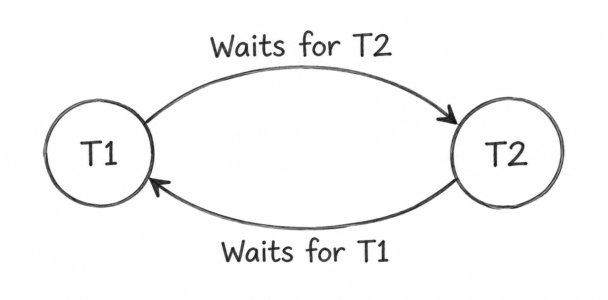

Q30. What Are Deadlocks? Explain the Methods Used for Deadlock Detection, Prevention, and Avoidance.
1. Deadlock
A Deadlock is a situation in DBMS where two or more transactions wait for each other to release locked resources.
As a result, none of the transactions can continue execution.
2. Example of Deadlock
Suppose two transactions, T1 and T2, are accessing data items A and B.
- T1: Locks A and waits for B.
- T2: Locks B and waits for A.
Both transactions keep waiting for each other, causing a deadlock.
3. Deadlock Detection
Deadlock detection is used to identify whether a deadlock has occurred.
Wait-For Graph Method:
- Each transaction is represented by a node.
- An arrow from T1 to T2 means T1 is waiting for T2.
- If the graph contains a cycle, a deadlock exists.

After detecting a deadlock, the DBMS rolls back one transaction to release its locks.
4. Deadlock Prevention
Deadlock prevention uses rules to stop deadlocks from occurring.
a) Wait-Die Scheme
- Older transactions can wait for younger transactions.
- Younger transactions are rolled back if they request a lock held by an older transaction.
b) Wound-Wait Scheme
- Older transactions can force younger transactions to roll back.
- Younger transactions must wait if the lock is held by an older transaction.
Both methods use timestamps to prevent deadlocks.
5. Deadlock Avoidance
Deadlock avoidance checks whether granting a lock may lead to a deadlock.
Safe State Method:
- Before granting a lock, the DBMS checks whether all transactions can still complete safely.
- If granting the lock may lead to an unsafe state, the transaction must wait.
- The lock is granted only when the system can remain in a safe state.